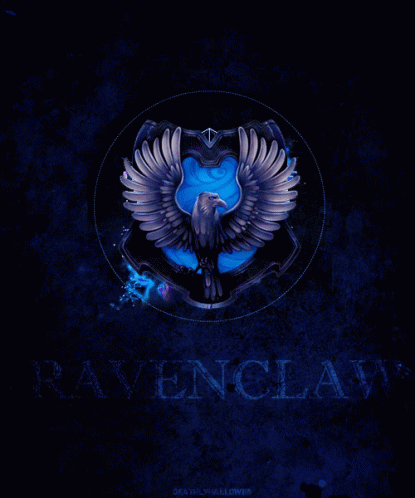

Ravenclaw was one of the four Houses of Hogwarts School of Witchcraft and Wizardry. Its founder was the medieval witch Rowena Ravenclaw.[1] Members of this house were characterised by their wit, learning, and wisdom. The emblematic animal symbol was an eagle, and blue and bronze were its colours.The Head of Ravenclaw was Filius Flitwick,and the House ghost was the Grey Lady,real name Helena Ravenclaw, daughter of Rowena.
Ravenclaw corresponded roughly to the element of air,and it was for that reason that the House colours were chosen; blue and bronze represented the sky and eagle feathers respectively, both having much to do with air.The Ravenclaw points hourglass contained blue sapphires.Ravenclaw House prized learning, wisdom, wit, and intellect in its members.[6] Thus, many Ravenclaws tended to be academically motivated and talented students. They also prided themselves on being original in their ideas, and methods. It was not unusual to find Ravenclaw students practising especially different types of magic that other houses might shun.[7] Hermione Granger, an extremely intelligent witch and the top student in her year, was sorted into Gryffindor, though she admitted that the Sorting Hat had seriously considered placing her in Ravenclaw.
Often hard-working and diligent, as often was the case with intellectuals with a predisposition for academics, some of the pupils sorted under the blue-bronzed eagle were known to be inclined to dismiss certain social expectations for the sake of satisfying their own intellectual curiosity.